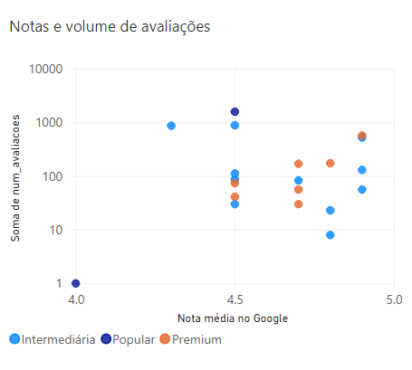
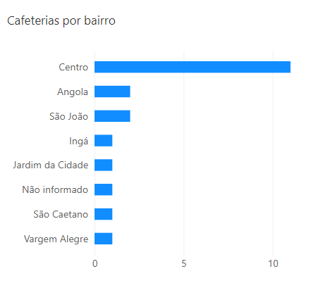
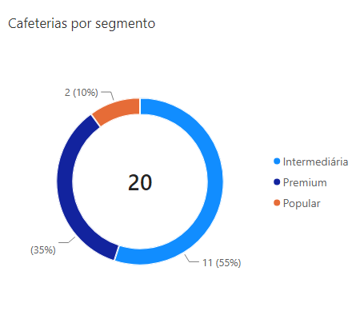
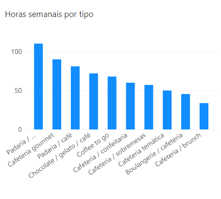
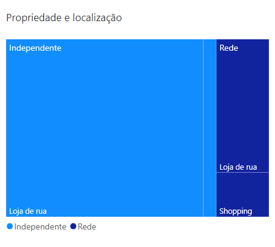
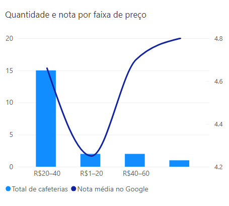

Problema
A ausência de uma visão consolidada dificulta comparar bairros, segmentos e modelos de negócio — e identificar onde há espaço para novos entrantes.
Trabalho Prático · Business Intelligence
Um estudo de Inteligência de Negócios sobre o setor de cafeterias de Betim (MG): coleta primária, modelagem dimensional e um dashboard analítico com seis visões estratégicas para apoiar a tomada de decisão.
Resumo executivo
Betim concentra um mercado de cafeterias diverso e pouco documentado. O projeto transforma o mapeamento de campo em uma base analítica confiável, revelando padrões de localização, posicionamento, reputação e disponibilidade operacional.
A ausência de uma visão consolidada dificulta comparar bairros, segmentos e modelos de negócio — e identificar onde há espaço para novos entrantes.
Coleta primária em fontes públicas (Google Maps), padronização via ETL em Python, modelagem dimensional (fato + dimensões) e visualização analítica no Power BI.
Um dashboard público com seis visões e uma landing page que apoia gestores, investidores e estudos acadêmicos sobre o setor.
Equipe
Equipe responsável pelo levantamento de campo, tratamento ETL e modelagem analítica.
Fundamentação e método
O projeto segue o fluxo clássico de BI: extração e tratamento (ETL), armazenamento estruturado, modelagem em estrela e camada de apresentação analítica.
Repositório central, orientado a assunto e não volátil, que consolida dados de diferentes origens para consulta analítica — aqui representado pela base tratada das cafeterias.
Organização em tabela fato (métricas do negócio) e dimensões (contexto de análise), favorecendo consultas rápidas e visões por bairro, tipo, segmento e propriedade.
Conjunto de processos e tecnologias que transforma dados em informação acionável, apoiando decisões com indicadores, dashboards e storytelling visual.
Levantamento de cafeterias em fontes públicas, com endereço, coordenadas e atributos de negócio.
Script Python padroniza nomes, tipos, bairros, números e ausências — gerando um CSV pronto para carga.
Tabela fato (cafeterias) cercada por dimensões de tipo, segmento, bairro, propriedade, localização e status.
Medidas DAX, seis visões analíticas e KPIs para leitura executiva do mercado.
Fato: notas, avaliações, preço e horas abertas · Dimensões: contexto de análise.
Análise
Os seis gráficos do relatório Cafeterias de Betim no Power BI.
Dispersão por segmento — eixo Y em escala logarítmica.

Contagem de estabelecimentos por região.

Popular, intermediária e premium.

Disponibilidade operacional média semanal.

Treemap de independentes e redes por tipo de ponto.

Quantidade de cafeterias (colunas) e nota média Google (linha).

Síntese dos indicadores e achados principais do mapeamento.
Entregáveis
Consulte o mapa geográfico do mapeamento e o relatório no Power BI.
Arquivo mapa2.pdf com a distribuição espacial das cafeterias mapeadas.
Página Análise das cafeterias, com seis gráficos no Power BI Service.
app.js